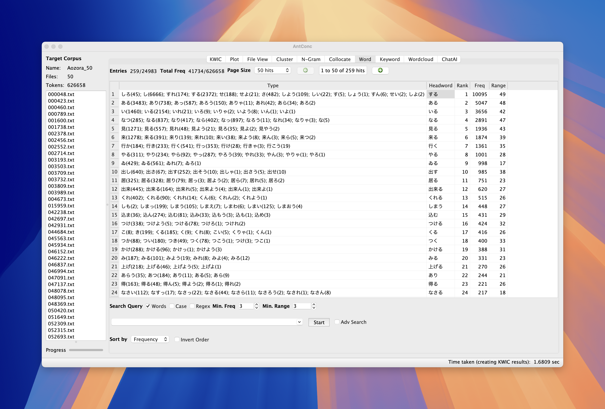

Session 11: Hands-on Activity
Housekeeping
Session overview
🎯 Learning Objectives
By the end of this session, students will be able to:
- Understand NLP tasks such as POS tagging and dependency parsing
- Understand how automated parsing works
- Conduct multi-lingual Part-Of-Speech (POS) tagging using TagAnt
- Conduct POS tagging using spaCy library in Python (through Google Colab)
- Conduct Dependency parsing using spaCy library in Python (through Google Colab)
Hands-on Activity
Task 1: POS tagging with TagAnt
Task 2: POS-sensitive frequency list
Task 3: Understanding dependency grammar through visualization
POS tagging with TagAnt
Tagging with TagAnt
- Open TagAnt
- Select
Input Files - Select
Language - Select Display information (see next)
Display setting info in TagAnt
Followings are basic selection in TagAnt.
| Menu | Function | Example |
|---|---|---|
| word | tokenization | dogs, ran |
| pos | POS tag (simple) | NOUN, VERB |
| pos_tag | POS tag (detailed) | NNS, VBD |
| lemma | lemmatized word | dog, run |
Other Diaplay settings
| Menu | Function | Example |
|---|---|---|
| word+pos | tokenization and POS | dogs_NOUN, ran_VERB |
| word+lemma +pos_tag | token+lemma+POS | dogs_dog_NN, ran_run_VERB |
Task 1: Annotating Japanese text (10 mins)
- Annotate 50 Japanese text files with TagAnt.
- Create frequency list for
aozora_50
Task 1: Answer
Before
「大溝」
僕は本所界隈のことをスケツチしろといふ社命を受け、同じ社のＯ君と一しよに久振りに本所へ出かけて行つた。After
「_補助記号-括弧開_「 大溝_名詞-固有名詞-人名-姓_大溝 」_補助記号-括弧閉_」
_SPACE_ 僕_代名詞_僕 は_助詞-係助詞_は 本所_名詞-固有名詞-地名-一般_本所 界隈_名詞-普通名詞-一般_界隈 の_助詞-格助詞_の こと_名詞-普通名詞-一般_こと を_助詞-格助詞_を スケツチ_名詞-普通名詞-一般_スケツチ しろ_動詞-非自立可能_する と_助詞-格助詞_と いふ_動詞-一般_いふ 社命_名詞-普通名詞-一般_社命 を_助詞-格助詞_を 受け_動詞-一般_受ける 、_補助記号-読点_、 同じ_連体詞_同じ 社_名詞-普通名詞-助数詞可能_社 の_助詞-格助詞_の Ｏ_名詞-普通名詞-一般_o 君_接尾辞-名詞的-一般_君 と_助詞-格助詞_と 一しよ_名詞-普通名詞-サ変可能_一しよ に_助詞-格助詞_に 久_形容詞-一般_久い 振り_接尾辞-名詞的-一般_振り に_助詞-格助詞_に 本所_名詞-固有名詞-地名-一般_本所 へ_助詞-格助詞_へ 出_動詞-一般_出る かけ_動詞-非自立可能_かける て_助詞-接続助詞_て 行つ_動詞-一般_行ふ た_助動詞_た 。_補助記号-句点_。Task 2: Frequency-list by POS tags (10 mins)
- Using
AntConc, create following frequency lists:- Create a frequency list of
動詞-非自立可能
- Create a frequency list of
- If you are done, please create another frequency list with different search terms.
Task 2: Key
非自立可能動詞
Advanced options in TagAnt
- In TagAnt, you can download models for other languages.
loading other models
Any questions?
- Now you can parse multilingual text with TagAnt.
Understanding dependency grammar
Goals
- Describe grammatical structure of a simple sentence using terminology such as
ROOT,head,dependency type, anddependent.
Dependency grammar (係受け)
- Dependency grammar is particular type of syntactic tree.
- forms a tree by defining binary relations between running tokens.
- Each token in the sentence is governed by one token (i.e.,
head) - The highest in the syntactic tree is termed as
ROOT
Dependency grammar (係受け) - 2
- There are a few different approaches to formalize dependency
- Universal Dependency
- Stanford Dependency
- ClearNLP
- etc.
Simple example
The following is a dependency for I play baseball.

simple-dependency
In table format
The same sentence, I play baseball can be expressed in the following format
| tid | token | dep | head |
|---|---|---|---|
| 1 | I | nsubj | 2 |
| 2 | play | ROOT | |
| 3 | baseball | dobj | 2 |
| 4 | . | punct | 2 |
This type of vertical format is often used to represent multi-layered token information.
Some excercise - Problem 1
Try filling in the gap in the following table.
| tid | token | dep | head |
|---|---|---|---|
| 1 | I | ||
| 2 | love | ROOT | |
| 3 | beef | ||
| 4 | tongue | ||
| 5 | . | punct | 2 |
Some excercise - Problem 2
Try filling in the gap in the following table.
| tid | token | dep | head |
|---|---|---|---|
| 1 | The | ||
| 2 | cat | ||
| 3 | sleeps | ROOT | |
| 4 | on | ||
| 5 | the | ||
| 6 | mat | ||
| 7 | . | punct | 3 |
Some excercise - Problem 3
Try filling in the gap in the following table.
| tid | token | dep | head |
|---|---|---|---|
| 1 | She | ||
| 2 | quickly | ||
| 3 | reads | ROOT | |
| 4 | interesting | ||
| 5 | books | ||
| 6 | . | punct | 3 |
Using dependency parsers to identify grammatical dependency
About Google Colab (5 mins)
Python basics (15 mins)
First text analysis
- First thing is to load the package.
- Then you will define a variable
example_text
- Analyze this using spacy
Result of your first text analysis
- Let’s print analysis results
Let’s parse the sentence.
Visit our webapp
Try the sentences above and analyze their dependencies
In what way are these sentence complex?
Describe complexification strategies:
- She hopes to join an international research team after graduation.
- Experts agree that collaboration improves problem-solving efficiency.
- Students often struggle because they lack sufficient guidance.
- He succeeded in the most demanding and competitive program at the university.
- The growing influence of social media on youth behavior is concerning.
- Policies that encourage innovation are essential for economic growth.
Now try your own examples
Questions?
Reflection
Next step
Linguistic Data Analysis I